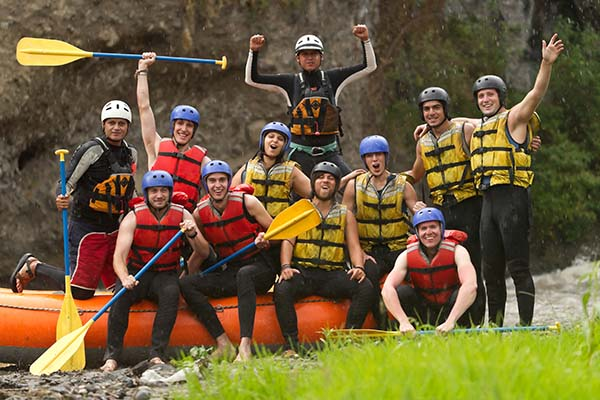

Company Purpose: To act as a catalyst for human connection and personal growth by immersing people in the raw, untamed power of the river, creating memories that flow long after the ride is over. Mission Statement: Our mission is to provide world-class, adrenaline-pumping river experiences that prioritize safety above all else. We are dedicated to preserving the natural ecosystems we explore, empowering our guests to conquer their fears, and fostering a deep respect for the great outdoors through expert guidance and unmatched hospitality. Vision Statement: To be the premier adventure company known globally not just for the rapids we conquer, but for the community we build and the wild places we protect.